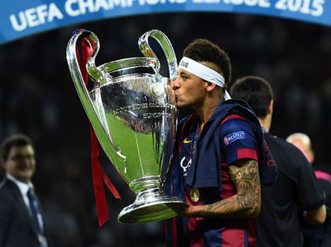
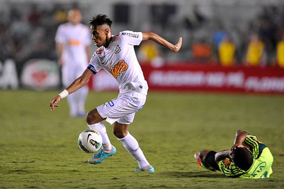
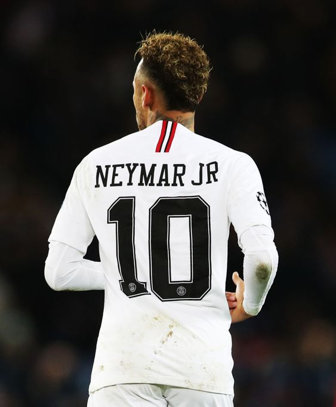

|  | Barcelona: Su debut en el Barcelona fue en el partido de la primera jornada de la temporada 2013-2014 ante el levante, en el cual ingresó al minuto 63 y su equipo ganó por un marcador de 7-0. Su primer gol con la camiseta blaugrana lo anotó el 21 de septiembre de 2013 en el partido por la Súpercopa de España ante el Atlético de Madrid. Posteriormente llegaría su primer clásico ante el Real Madrid el 26 de octubre de ese mismo año, en el que logró aportar un gol a la victoria 2-1 de su equipo. |
|  | Santos: El 7 de marzo de 2009 Neymar debutó como profesional en el Santos a la edad de 17 años, en un partido contra Oeste en el cual jugo los últimos 30 minutos del partido. Su primer gol en el equipo lo haría una semana después de su debut ante el Mogi Mirim y el 11 de abril de ese mismo año lograría anotar un gol decisivo en la semifinal de ida ante el Palmeiras, partido el cual su equipo gano 2-1. La final de esa temporada desafortunadamente la perdería 4-2 ante el Corinthians, siendo el final de su primera temporada en la cual logró anotar 14 goles en 48 partidos. |
|  | Paris Saint Germain: El 3 de agosto del año 2017, después de muchas especulaciones, se oficializó el traspaso de Neymar al París Saint-Germain Football Club, por una cifra que alcanzó los 222 millones de euros. El 5 de agosto de ese mismo año, el jugador brasilero fue presentado en el estadio Parque de los Príncipes, donde fue ovacionado por miles de hinchas. Para el 23 de octubre del año 2017, Neymar hizo parte del FIFA/FIFPro World XI escogido por la FIFA, el cual hace referencia al once ideal de la temporada. El 1 de enero de 2018 ganó el premio «Samba de oro 2017», por haber sido el mejor jugador brasileño que actúa en Europa. |